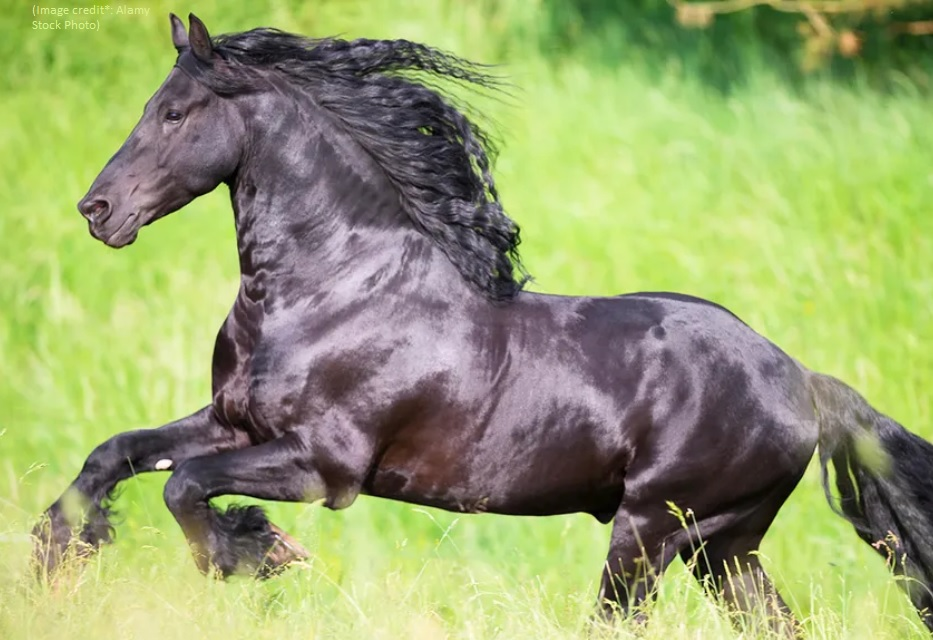
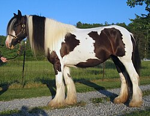
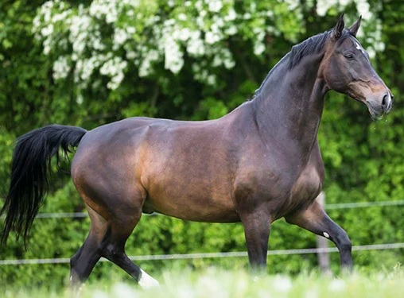

Sable

Rasa: koń fryzyjski
Sable to spokojna i dostojna klacz, która lubi spokojne przejażdżki i pracę z jeźdźcami.
Szkółka jeździectwa i stadnina koni
Wrzosowisko to miejsce stworzone z myślą o miłośnikach koni, jeździectwa i natury
Poznaj naszą stadninę, konie oraz ofertę zajęć jeździeckich.
Poznaj konie, które mieszkają w naszej stadninie i towarzyszą nam podczas jazy.

Rasa: koń fryzyjski
Sable to spokojna i dostojna klacz, która lubi spokojne przejażdżki i pracę z jeźdźcami.

Rasa: haflinger
Aspen to przyjazny i odważny koń, który lubi jazdę terenową oraz spokojne przejażdżki.

Rasa: tinker
Freya to łagodna i cierpliwa klacz, która dobrze sprawdza się podczas nauki jazdy i zajęć dla początkujących.

Rasa: hanowerski
Adler to energiczny i skupiony ogier, który dobrze sprawdza się podczas treningów ujeżdżenia i skoków.
W Wrzosowisku oferujemy zajęcia dla osób o różnym poziomie doświadczenia.
Zajęcia dla początkujących oraz osób, które chcą rozwijać swoje umiejętności jeździeckie.
Spokojne przejażdżki w otoczeniu natury dla osób, które chcą odpocząć od codzienności.
Treningi ujeżdżeniowe i Skokow dla bardziej doświadczonych jeźdźców
Masz pytania dotczące jazdy konnej lub naszej stadniny? Skontaktuj się z nami.
E-mail: kontakt@wrzosowisko.pl
Telefon: XXX XXX XXX